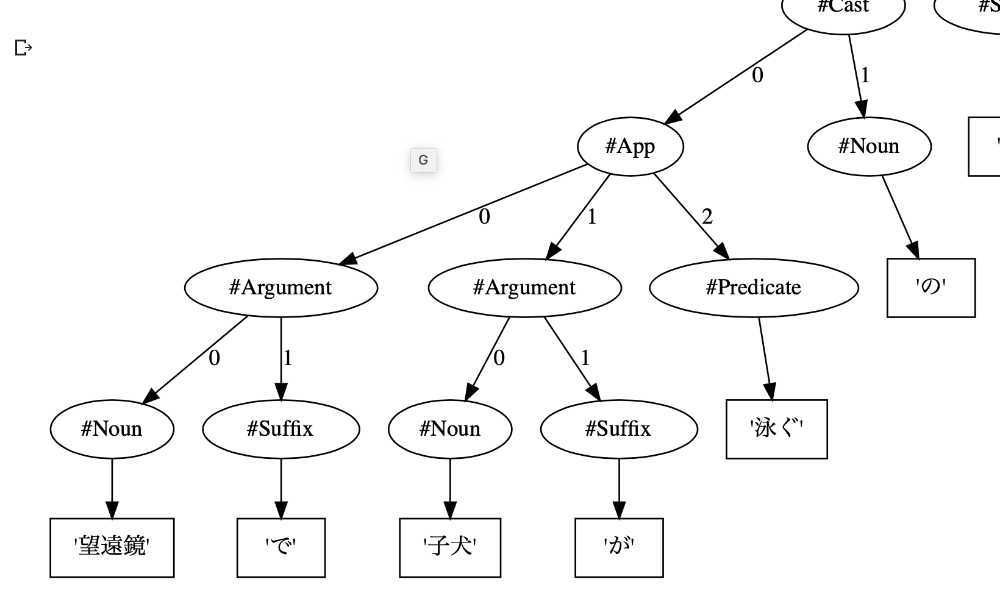

TOPICS/KEYWORD
プログラミングとAI
深層学習(AI)を活用したプログラミング
プログラミング教育
文書分類、翻訳 、要約、質問応答など。 ソフトウェア開発をできるようなAIを作っています。 AIの基礎を学びながら取り組みます。
教材開発
アルゴリズムからデータサイエンスまで 興味をもって取り組める教材開発を行っています。
TRON
学生時代は、坂村健教授の元でトロンOSの開発に取り組んでいたため、 基盤ソフトウェア開発、特に言語処理系に興味があります。
解析表現文法


MEMBER
Professor
倉光 君郎
Kimio Kuramitsu
東京大学工学部機械情報工学科
東京大学大学院理学系研究科情報科学専攻
博士（理学）指導教授 坂村健
略歴
2001年 東大大学院情報学環 助手2005年 横浜国立大学工学部電子情報工学科 講師
2006年 米ジョージア工科大学 客員研究員
2007年 横浜国立大学大学院物理情報工学専攻 准教授
2018年 日本女子大学理学部数物科学科 教授
研究プロジェクト（研究代表者）
経済産業省 IPA 未踏ソフトウェア創造事業総務省 SCOPE-R 組込み向けバーチャルマシン
文部科学省 JST/CREST 高信頼OSプロジェクト
Students
M2
Mari Taguchi
Mayu Tomioka
Miyu Tamura
M1
Momoka Obara
Shiho Takano
Teruno Kajiura
B4
Miyu Satoh
Yuka Satoh
Nao Souma
Mai Takahashi
Midori Numazawa
Nanako Takizawa
Erika Kimura
Fellow
Yuka Akinobu
Alumnuies


ACHIEVEMENT


2021
- Yuka Akinobu, Momoka Obara, Teruno Kajiura, Shiho Takano, Miyu Tamura, Mayu Tomioka, Kimio Kuramitsu. Is Neural Machine Translation Approach Accurate Enough for Coding Assistance? In Proc. of ACM Beyond Code No Code (BCNC), 2021.
- 高野志歩，田村みゆ，富岡真由，秋信有花, 倉光君郎. 擬似コードから考える自然言語を活かしたプログラミング言語. 情報処理学会情報教育シンポジウム2021 (SSS2021)，2021. (査読あり) ＜学生奨励賞＞
- 秋信 有花，小原百々雅，倉光君郎. Transformer による日本語とPythonコード間の機械翻訳. 情報処理学会プログラミング研究会(PRO134), 2021.
- 縫嶋 慧深，秋信 有花, 倉光君郎. Pythonと日本語変換：Trans-CompilerとTransformerの比較． 情報処理学会第62回プログラミング・シンポジウム, 2021.
2020
- Yuka Akinobu, Emi Nuijima and Kimio Kuramitsu. Generating Parallel Corpus of Python Code and Natural Language for Deep Learning. 18th Asian Symposium on Programming Languages and Systems (APLAS 2020),(査読あり,ポスター発表), 2020.
- 秋信 有花，倉光君郎. Puppyによる60分プログラミング体験コースの実践． 情報処理学会情報教育シンポジウム2020 (SSS2020)，2020. (査読あり) ＜最優秀発表賞受賞＞
- 秋信 有花，倉光君郎. 自然言語記述からの近似コード生成を用いた初学者プログラミング支援. 情報処理学会xSIGワークショップ2020, 2020. (査読あり) ＜Outstanding Undergraduate Student Award 受賞＞
- 秋信 有花，多田 拓，倉光 君郎: 自然言語処理を用いた初学者向けプログラミング支援．言語処理学会第26回年次大会 (NLP2020), ポスター発表, 2020.
- 若杉 祐依，秋信 有花，渡邉 遥輔，倉光 君郎: 解析表現文法によるCNL日本語文法の試作．言語処理学会第26回年次大会 (NLP2020), 2020.
- 秋信 有花，縫嶋 慧深，倉光 君郎: プログラミング言語とのギャップを埋めるための形式日本語の提案．NLP若手の会 第15回シンポジウム (YANS2020), 2020.
- 縫嶋 慧深，秋信 有花，倉光 君郎: 自然言語とPython間での双方向機械翻訳の実現に向けて．NLP若手の会第15回シンポジウム (YANS2020), 2020.
- 秋信 有花，縫嶋 慧深，田村 みゆ，倉光 君郎: 深層学習による自然言語処理技法をプログラミング言語に橋渡しする形式日本語．情報処理学会第131回プログラミング研究発表会 (PRO131), 2020.
- 田村 みゆ，杉内 ゆり乃，縫嶋 慧深，田口 真里，秋信 有花，倉光 君郎: オンライン演習下における自由記述感想文からの学習意欲の予測モデル．情報処理学会情報教育シンポジウム2020 (SSS2020)，2020. (査読あり) <デモ・ポスター賞受賞>
- 富岡 真由，秋信 有花，倉光 君郎: 学習ログとブロックチェーンによる多角的なプログラミング・スキルの証明書．情報処理学会情報教育シンポジウム2020 (SSS2020)，2020. (査読あり)
2019
- Tada Taku, Yuka Akinobu, Makoto Sakane, Kimio Kuramitsu. Puppy: an educational simplification of Python with Live Playground. In Proc. of the ACM SPLASH/LIVE2019. 2019. (査読あり), 2019.
- 秋信 有花，坂根 万琴，多田 拓, 倉光君郎. Puppy : ライブなコーディング入門環境. 情報処理学会情報教育シンポジウム2019 (SSS2019), ポスター発表, 2019. (査読あり) ＜ポスター・デモ発表賞受賞＞
- 坂根 万琴，多田 拓，秋信 有花，倉光 君郎: Puppy: 物理エンジンを統合した中高生向けPython入門環境．情報処理学会第126回プログラミング研究発表会 (PRO126), 2019.
- 渡邉 遥輔，秋信 有花，若杉 祐依，倉光 君郎: 解析表現文法を用いた日本語文法定義の試作．情報処理学会第126回プログラミング研究発表会 (PRO126), 2019.